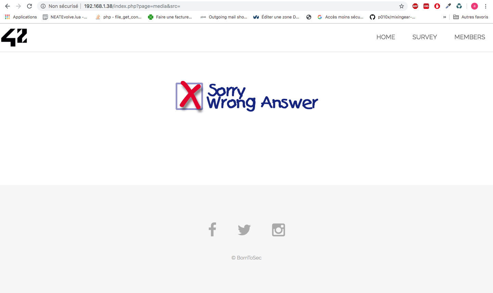

xss html src
Exploitation de la faille :
Etape 1 :
Si on vas sur la page d'acceuil du site sur une image il ya a ?page=media&scr=nsa

Etape 2 :
si on click sur le lien on tombe sur l'image
Etape 3 :
Si on change la valeur de src par rien par exemple on a une erreur
Etape 4 :
Explication
Etape 5 :
Convertion du javascript en base 64
Etape 6 :
Explication
Etape 7 :
Si on execute cette ligne dans le navigateur on aura :
Etape 8 :
Si on met cette ligne dans le src on aura donc une faille :
Protection de la faille :
Verifier que la base64 est bien une image